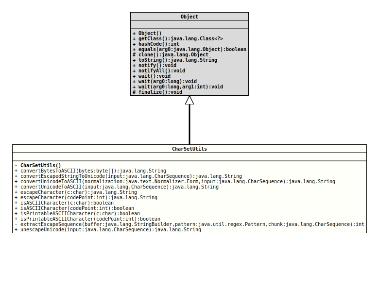

java.lang.Object
org.tquadrat.foundation.util.CharSetUtils
@ClassVersion(sourceVersion="$Id: CharSetUtils.java 1060 2023-09-24 19:21:40Z tquadrat $")
@API(status=STABLE,
since="0.1.0")
@UtilityClass
public final class CharSetUtils
extends Object
This class provides several utilities dealing with Strings in different
character sets/encodings.
- Author:
- Thomas Thrien (thomas.thrien@tquadrat.org)
- Version:
- CharSetUtils: HexUtils.java 747 2020-12-01 12:40:38Z tquadrat $
- Since:
- 0.1.0
- UML Diagram
-

UML Diagram for "org.tquadrat.foundation.util.CharSetUtils"
{kind=link}
-
Constructor Summary
Constructors -
Method Summary
Modifier and TypeMethodDescriptionstatic final StringconvertBytesToASCII(byte[] bytes) Converts the given byte array into to a String that will only contain printable ASCII characters; all other characters will be 'escaped' to the format "\uXXXX".static final StringConverts a String that contains only ASCII characters and Unicode escape sequences like "\uXXXX" to the equivalent Unicode String.
This method will not touch other escape sequences, like"\n"or"\t".static final StringTranslates the given Unicode String without any normalisation to a String that will only contain printable ASCII characters; all other characters will be 'escaped' to the format "\uXXXX".static final StringconvertUnicodeToASCII(Normalizer.Form normalization, CharSequence input) Applies the given normalisation to the given Unicode String and translates it to a String that will only contain printable ASCII characters; all other characters will be 'escaped' to the format "\uXXXX".static final StringescapeCharacter(char c) Returns the Unicode escape sequence for the given character.static final StringescapeCharacter(int codePoint) Returns the Unicode escape sequence for the given code point.private static final intextractEscapeSequence(StringBuilder buffer, Pattern pattern, CharSequence chunk) Extracts the escape sequence from the given chunk, write the result to the buffer and returns the offset.static final booleanisASCIICharacter(char c) Returnstrueif the given character is an ASCII character.static final booleanisASCIICharacter(int codePoint) Returnstrueif the given code point represents an ASCII character.static final booleanisPrintableASCIICharacter(char c) Returnstrueif the given character is a printable ASCII character.static final booleanisPrintableASCIICharacter(int codePoint) Returnstrueif the given code point represents a printable ASCII character.static final StringunescapeUnicode(CharSequence input) Parses Strings in the format "\uXXXX", containing the textual representation of a single Unicode character, to the respective Unicode character.
-
Constructor Details
-
CharSetUtils
private CharSetUtils()No instance allowed for this class!
-
-
Method Details
-
convertBytesToASCII
Converts the given byte array into to a String that will only contain printable ASCII characters; all other characters will be 'escaped' to the format "\uXXXX". This can be useful to generate a String in another character set/encoding than ASCII or UTF-8/Unicode, given that the receiving part can interpret the format.
But generally, a transfer encoding like BASE64 or quoted-printable should be preferred.- Parameters:
bytes- The input; may benull.- Returns:
- The output string;
nullif the input was alreadynull. - Since:
- 0.1.0
-
convertEscapedStringToUnicode
@API(status=STABLE, since="0.1.0") public static final String convertEscapedStringToUnicode(CharSequence input) throws IllegalArgumentException Converts a String that contains only ASCII characters and Unicode escape sequences like "\uXXXX" to the equivalent Unicode String.
This method will not touch other escape sequences, like"\n"or"\t". Refer toString.translateEscapes().- Parameters:
input- The input String; may benull.- Returns:
- The output string;
nullif the input string was alreadynull. - Throws:
IllegalArgumentException- The given input String contained at least one non-ASCII character.- Since:
- 0.1.0
-
convertUnicodeToASCII
@API(status=STABLE, since="0.1.0") public static final String convertUnicodeToASCII(Normalizer.Form normalization, CharSequence input) Applies the given normalisation to the given Unicode String and translates it to a String that will only contain printable ASCII characters; all other characters will be 'escaped' to the format "\uXXXX".- Parameters:
normalization- The normalisation form; in case it isnull, no normalisation will be performed.input- The input String; may benull.- Returns:
- The output String;
nullif the input String was alreadynull. - Since:
- 0.1.0
-
convertUnicodeToASCII
@API(status=STABLE, since="0.1.0") public static final String convertUnicodeToASCII(CharSequence input) Translates the given Unicode String without any normalisation to a String that will only contain printable ASCII characters; all other characters will be 'escaped' to the format "\uXXXX". Calling this method is the same as callingconvertUnicodeToASCII(Normalizer.Form, CharSequence)withnullas the first argument.- Parameters:
input- The input String; may benull.- Returns:
- The output String;
nullif the input String was alreadynull. - Since:
- 0.1.0
-
escapeCharacter
Returns the Unicode escape sequence for the given character. This will return "\u0075" for the letter 'u', and "\u003c" for the smaller-than sign '<'.
This method should be used only for characters that are not surrogates; for general use, the implementation that takes a code point is preferred.- Parameters:
c- The character.- Returns:
- The escape sequence.
- Since:
- 0.1.0
- See Also:
-
escapeCharacter
@API(status=STABLE, since="0.1.0") public static final String escapeCharacter(int codePoint) throws IllegalArgumentException Returns the Unicode escape sequence for the given code point. This will return "\u0075" for the letter 'u', and "\u003c" for the smaller-than sign '<'.
This method takes only a single code point; to translate a whole String, this code sequence can be used:
This will escape all characters in the String. If only a subset needs to be escaped, the mapping function in… String result = input.codePoints() .mapToObj( codePoint -> escapeUnicode( codePoint ) ) .collect( Collectors.joining() ); …mapToObj()can be adjusted accordingly. Something like that is implemented with the methodconvertUnicodeToASCII(CharSequence).- Parameters:
codePoint- The character.- Returns:
- The escape sequence.
- Throws:
IllegalArgumentException- The given code point is invalid.- Since:
- 0.1.0
- See Also:
-
isASCIICharacter
Returnstrueif the given character is an ASCII character.- Parameters:
c- The character to check.- Returns:
trueif the given character is an ASCII character,falseotherwise.
-
isASCIICharacter
Returnstrueif the given code point represents an ASCII character.- Parameters:
codePoint- The code point to check.- Returns:
trueif the given code point represents an ASCII character,falseotherwise.
-
isPrintableASCIICharacter
Returnstrueif the given character is a printable ASCII character. That means, it is an ASCII character, but not a control character.- Parameters:
c- The character to check.- Returns:
trueif the given character is a printable ASCII character,falseotherwise.
-
isPrintableASCIICharacter
Returnstrueif the given code point represents a printable ASCII character. That means, it is an ASCII character, but not a control character.- Parameters:
codePoint- The code point to check.- Returns:
trueif the given code point represents a printable ASCII character,falseotherwise.
-
extractEscapeSequence
private static final int extractEscapeSequence(StringBuilder buffer, Pattern pattern, CharSequence chunk) Extracts the escape sequence from the given chunk, write the result to the buffer and returns the offset.- Parameters:
buffer- The target buffer.pattern- The regex pattern for the check.chunk- The chunk to check.- Returns:
- The offset; one of 1, 6, or 12.
-
unescapeUnicode
Parses Strings in the format "\uXXXX", containing the textual representation of a single Unicode character, to the respective Unicode character. Some Unicode characters will be represented as surrogate pairs in Java, so the String that is returned by this method may contain more than onechar.
The input format for this method is used in Java source code Strings, in Java.propertiesfiles, in C/C++ source code, in JavaScript source, …- Parameters:
input- The input String with the Unicode escape sequence.- Returns:
- The Unicode character.
- Throws:
ValidationException- The input isnull, empty, or cannot be parsed as a unicode escape sequence.- Since:
- 0.1.5
-